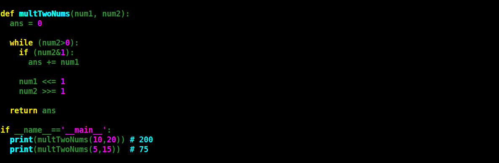

Russian Peasant Multiplication
Hi guys, In this blog we are going to talk about the multiplication of two number using any programming language but twist is you are not allow to use the asterix symbol i.e *.
When I was in first year of my MCA course,my teacher write a function on a board and he told us that figure out what operation does this function is performing. When I complete with that function I was shocked, the function is performing an multiplication of two numbers using only addition. I was thinking that there are lots more things that I should know. Some colleges don't even teach that too I guess, but I'm lucky that at least I have a best teachers.
Multiplication using an Addition:
Assuming that 'a' and 'b' are belongs to set of natural numbers.
mult(a, 0) = 0
mult(a, 1) = a
mult(a, b) = mult(a+a, b-1)
The function 'mult' is taking two numbers and we are adding first number until the second number becomes equal to one. We can decrease recursion calls by checking if 'a' is smaller than 'b' then we set 'b = a' and 'a = b'.
When I was reading about the bitwise operator coding competetive platform, I hit with the question that you have to perform multiplication of two number without using '*' symbol. I was thinking that if I don't have to use '*' then I could use '+' symbol. The above approach of multiplication is the only approach I knew at that time. As I was reading further I hit with the Russian Peasant Multiplication, and volla I got another method to perform multiplication of two numbers. The idea behind this method is lets say you have given two number 'a' and 'b' you have to choose either of between them to make double it or to make is half. Let say that you decided to make 'a' double each time and 'b' to make if half each time side by side we are adding 'a' each time when we make it double but the condition is if 'b' is odd only then we can include those number of "a's" value into our multiplication sum.
Example:
a = 13 and b = 6 (as 6 is not odd so we are not adding 13 into cumulative sum)
13 * 2 = 26, 6/2 = 3 (26 is added into cumulative sum)
26 * 2 = 52, 3/2 = 1 (52 is added into cumulative sum)
Ans = 26 + 52 = 78
For more details you can see here .
As we have seen the idea behind Russian Peasant Multiplication but we have used the '*' operator to for multiplying number by 2 and '*' operator is not allow us to used. So now we are gonna do is as we know that we are performing operation on bits and if we right shift of a number by 1 it is nothing but we are dividing number by 2 and if we performing left shift of a number by 1 it means we are multiplying a number by 2. Representing the above example without using '*' operator.
Example:
a = 13 and b = 6 (as 6 is not odd so we are not adding 13 into cumulative sum)
13 (left shift) 2 = 26, 6 (right shift) 2 = 3 (26 is added into cumulative sum)
26 (left shift) 2 = 52, 3 (right shift) 2 = 1 (52 is added into cumulative sum)
Ans = 26 + 52 = 78
And we are done.
Lets implement this logic: 
Thank You!